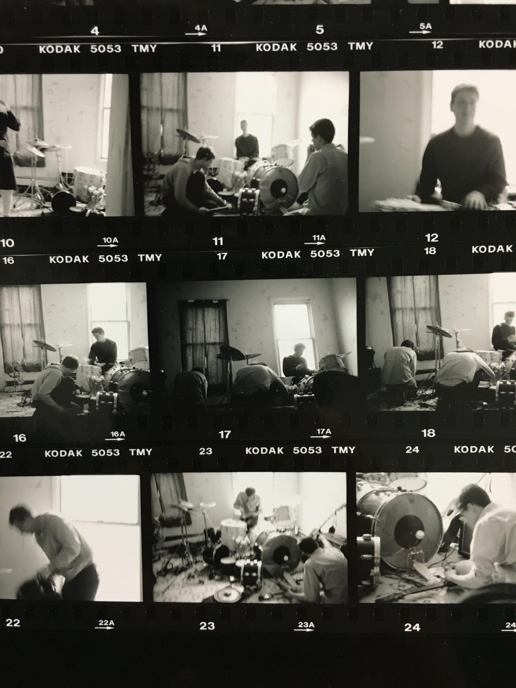
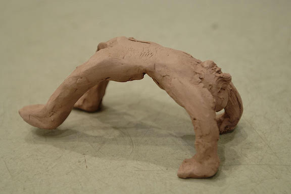
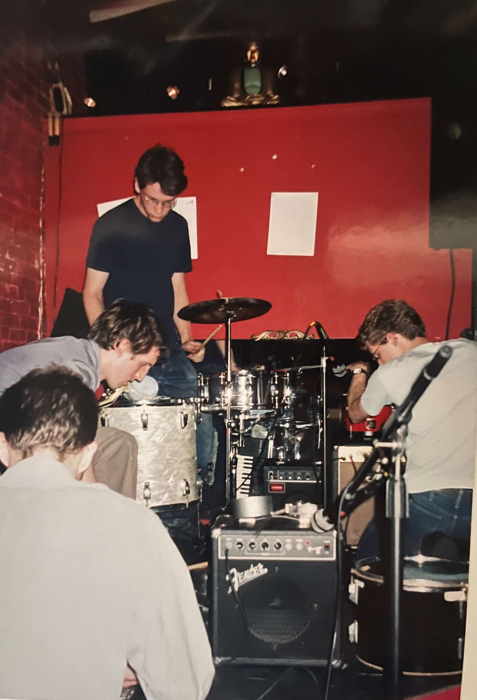
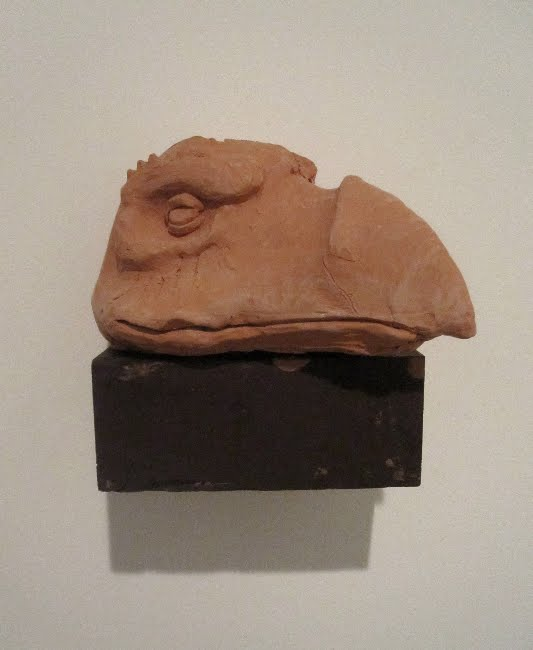
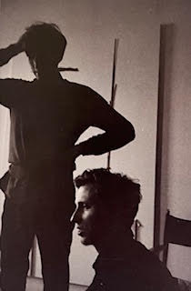
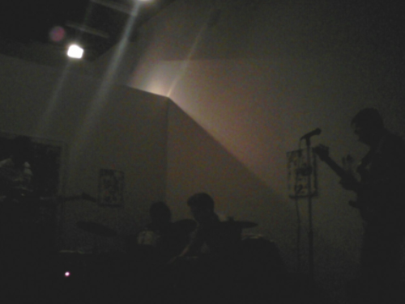
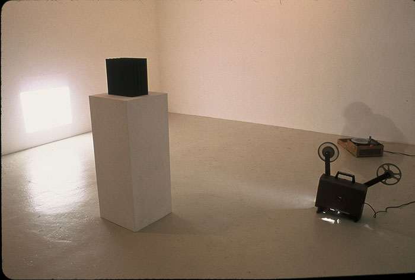
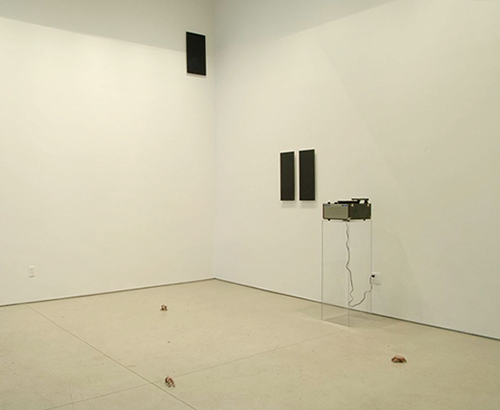
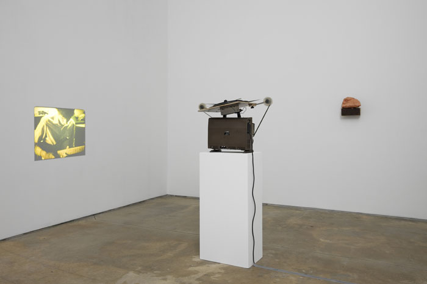
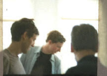

Collaborative Work
HURRAY is an art collective and band, which produces records, videos and film, photography and installation art.






"I think the band began out of a social desire to spend time together and to work on communicating and making something together. I often think of the music we make -- the improvised, open, indeterminate, and precarious nature of it, and it's potential to include any of a broad range of sounds and take on a variety of forms -- as a fairly explicit metaphor for communication between people. Our music making and our art making are pretty democratic, open processes. The things we make -- recordings, films, drawings, sculptures, or texts -- are attempts to give form to the specifics and peculiarities that define our group communication and our ways of thinking together. The process of formalizing something that begins as casual and private can result in different kinds of confusion. Some of these confusions come from the idea of a band creating and documenting itself in different contexts and forms -- trying to record its own history as it creates the things that make up this history. We like to explore the forms and ways in which bands are supposed to exist and do things." - Hurray.

"In this film there was an event, and two documentations of this event. Each is presented on a different analog machine, and each requires the viewer to get that machine going. The film is just two minutes long, and the record lasts 9:59, so there is an inevitable disjuncture between the syncing of the visual and the auditory. So what becomes important is that the object exists outside of itself. That is, its meaning is not in the visual or auditory, these two entities are dark and muddled (and as documentation they fail), but rather in the malleable coexistence of the two as a specific time split into parts and then contained in separate sensory machines that present them as such. It has been done in an edition of five, and the ephemeral qualities of sound and vision are figuratively and literally contained in handsome boxes as "film" and "vinyl record", ready to sit on a shelf. The boxes and their contents become a physical manifestation of the idea. They act as place markers or as mementos, symbolic of something more." - Hurray.

Curated by Claire Barliant
Clay, record player, record, plexiglass pedestal, laminated photographs, framed drawing
I like that the show is about "repetition as a form of abstraction" -- as our Klagsbrun piece was originally a repetition and commemoration / abstraction of a past event. By repeating an experience (the performance that the film and record document) we transformed it into something both more concrete and less clear. The piece takes an experience (abstract) and makes it into a set of things (repetitions of the idea of the experience), sort of solidifying and diffusing it simultaneously. -Hurray.

Filmed between 2002 and 2006 on black and white, color and expired super 8 film, "The Art of the Hurrays" is an informal "behind the scenes" 16mm portrait of the band. The film captures the group practicing guitar, arranging an installation of photographs and sculptures, hanging out, and examining the machinery used in the pressing of a record.
Cultivated by a sensitivity to the interactions between an event and its recording, documentation for the band points towards creating a third experience. Structured and sparked by activities associated with bands, the organic process of conversation between the members directs the presentation and manipulation of these documents. Forgoing the usual pretense of a band documentary, T.A.O.T.H. focuses on demystification, the texture of film, the palpability of process, and joy.
As an accompaniment to the film, the band presents the sculpted head of a Skeksis, a fantasy race from the 1982 movie "The Dark Crystal." These creatures are the evil halves of the urSkeks, which were split in two when the Crystal of Truth was cracked and became the Dark Crystal. These creatures viciously rule the land and do everything they can to retain their power. First sculpted by the band in plasticine and then cast in resin, the head sits atop a found piece of painted wood and is attached to the wall via metal rods.
With this sculpture the band references the "cool" puppeteer world of Frank Oz and Jim Henson, and a specific generation that viewed the film as children. Hurray uses the "idea" of this appropriation to mark a starting point for making a sculpture. Working towards the magic of inanimate material taking on the feeling of a living being, Hurray casts this practice and this character as the viewer and a symbolic companion to the film. - Hurray.

Listen to recordings by Hurray on Soundcloud